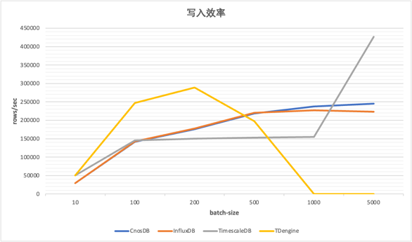
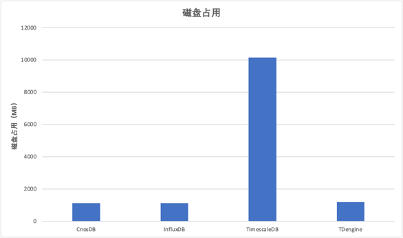

CnosDB性能比较
描述
为了帮助用户快速选型，本文对CnosDB，InfluxDB，TimescaleDB，TDengine等四种不同的时间序列数据库分别在数据写入，磁盘占用和查询效率三个纬度进行比较。
- 数据写入
- 磁盘占用
- 查询效率
测试工具使用时序数据库专用测试工具进行测试
运行环境
为了公平起见，均使用统一规格的运行环境进行比较，以下为阿里云上的ECS服务器配置
-
运行环境
ecs.c6e.4xlarge 16vCPU 32GiB Ubuntu 18.04.6 LTS ESSD云盘 400GB PL1- 软件版本
数据库 版本 CnosDB v1.0.1 InfluxDB v1.8.10 TimescaleDB v2.6.1-pg14 TDengine v2.4.0.18
摘要
CnosDB在每批次为5000的时候写入为245340.98/sec
InfluxDB在每批次为5000的时候写入为223701.85/sec
TimescaleDB在每批次为5000的时候写入为426297.89/sec
TDengine在每批次为200的时候写入为289107.37/sec
测试数据总量为62231779行数据，492052007个值，大小为12G，以8个线程分不同的批次向数据库写入
写入效率

磁盘占用

查询效率
| CnosDB | InfluxDB | TimescaleDB | TDengine | |
|---|---|---|---|---|
| last-loc | 23.50/sec | 21.72/sec | 861.71/sec | 2225.86/sec |
| low-fuel | 18.84/sec | 11.97/sec | 970.40/sec | 2608.26/sec |
| high-load | 23.37/sec | 16.47/sec | 896.53/sec | 不支持 |
| stationary-trucks | 3.95/sec | 2.99/sec | 87.37/sec | 不支持 |
| long-driving-sessions | 21.20/sec | 19.54/sec | 2.33/sec | 不支持 |
| long-daily-sessions | 4.66/sec | 4.33/sec | 0.29/sec | 不支持 |
| avg-vs-projected-fuel-consumption | 0.62/sec | 0.47/sec | 0.79/sec | 不支持 |
| avg-daily-driving-duration | 0.69/sec | 0.60/sec | 0.29/sec | 738.69/sec |
| avg-daily-driving-session | 0.36/sec | 0.33/sec | 0.29/sec | 不支持 |